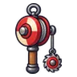

ซอมบี้ชาวนา · ร่างราเขียว
มอนธาตุอมตะ Lv 30–38
เจอที่
| แมพ | โซน | Lv | ภูมิภาค |
|---|---|---|---|
| สุสานเก่าหลังเนิน | 30–38 | ป่ากองไฟ | |
| สุสานเก่าหลังเนิน | สุสานหลวงเก่า | 36–38 | ป่ากองไฟ |
| บ้านผู้เฝ้าสุสาน | 30–38 | ป่ากองไฟ | |
| บ้านผู้เฝ้าสุสาน | หน้าบ้านผู้เฝ้า | 36–38 | ป่ากองไฟ |
ค่าสถานะตามเลเวล
| Lv | HP | ATK | DEF | MDEF | EXP | Job |
|---|---|---|---|---|---|---|
| 30 | 7,291 | 66–99 | 13 | 3 | 83 | 62 |
| 34 | 9,996 | 79–118 | 15 | 3 | 92 | 69 |
| 38 | 13,563 | 95–142 | 16 | 3 | 101 | 76 |
ตีด้วยธาตุไหนดี
แรงขึ้น: ศักดิ์สิทธิ์ ×1.5 ไฟ ×1.25
เบาลง: พิษ ×0 มืด ×0 อมตะ ×0
วัตถุดิบที่ดรอป
| ของ | โอกาส | |
|---|---|---|
| ผ้าปะชาวนาผี | 90% | 1 ชิ้น (15% ได้ 2) |
อุปกรณ์ที่ดรอป (5)
| ของ | โอกาส |
|---|---|
| ชุดวิญญาณเทียน (เสื้อ) | 0.15% |
| ชุดวิญญาณเทียน (กางเกง + รองเท้า) | 0.15% |
| แส้หางแรคคูน | 0.12% |
 ด้ายเหล็กโยโย่ใบเลื่อย | 0.12% |
| ชุดวิญญาณเทียน (เทียนเล่มจิ๋ว) | 0.05% |
สกิล
ทุบพื้น (Lv 25+) · ทุบพื้น (Lv 60+) · ดึง (Lv 60+)